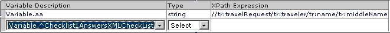
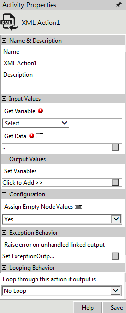

No
Activity description:
The XML Action Activity can be used to assign XML data for activity. This was possible earlier only by using Contents and Variables defined in the Start activity. The activity has been enhanced to accept XML data containing namespaces. The namespace manager that has been added to the activity handles namespaces within the XML data internally.
View an example of assigning XML data with namespaces to a variable
The namespaces in the following example used to illustrate the extraction of a particular data are highlighted in red.
<tr:travelRequest xmlns:xhtml="http://www.w3.org/1999/xhtml" xmlns:xsi="http://www.w3.org/2001/XMLSchema-instance" xmlns:tr="http://schemas.microsoft.com/office/infopath/2003/sample/TravelRequest" xmlns:my="http://schemas.microsoft.com/office/infopath/2003/myXSD" xmlns:xd="http://schemas.microsoft.com/office/infopath/2003">
<tr:description></tr:description>
<tr:date xsi:nil="true"></tr:date>
<tr:traveler>
<tr:name>
<tr:prefix></tr:prefix>
<tr:givenName>guru</tr:givenName>
<tr:middleName>nayak</tr:middleName>
<tr:surname></tr:surname>
<tr:suffix></tr:suffix>
<tr:singleName></tr:singleName>
</tr:name>
</tr:traveler>
</tr:travelRequest>
The XPath expression to retrieve the middle name and assign it to a workflow variable 'aa' is given below. The image shown below illustrates the actual setting of the variable with this XML data.
// tr:travelRequest/ tr:traveler/ tr:name/ tr:middleName

Application Scenarios:
The XML Action can be used with other AVEVA Work Tasks activities to retrieve required XML data by defining XPath expressions. For example, it can be used with the Checklist activity to retrieve the Answers to Checklist Questions.
The XPath expressions for retrieving answers to Checklist Questions
The XML Activity can be used with the Checklist Activity to retrieve the Answers to the Checklist Questions. The XML data format for the Checklist Activity to be declared in the Start activity is '^'+ activity name + 'AnswersXMLCheckList' , e.g. '^Checklist1AnswersXMLCheckList'.
The XPath expressions to retrieve the Answers from the Checklist XML string are given below:
XPath with attribute:
//checklist/question[@name="RADIO"]/answer
//checklist/question[@name="DROPDOWN"]/answer
//checklist/question[@name="TEXTBOX"]/answer
//checklist/question[@name="MEMO"]/answer
//checklist/question[@name="CHECKBOX"]/answer
Activity Properties:
The XML Activity has to be configured by specifying appropriate values for the different properties in the Activity Properties area. The Activity Properties can be accessed by clicking on the Activity Properties tool in the tool bar or by selecting the appropriate option from the right click menu for the XML Activity. The Activity Properties are organized under the following groups of related properties. The properties under each group are described in this topic.

Name & Description
The properties in the Name & Description group have been described below. You can use these properties to specify the name and description for the activity.
Name - This property can be used to specify a name for the activity.
Property Type: Optional (This property needs to be set only if necessary.)
Description - This property specifies a brief description to be displayed for the activity.
Property Type: Optional (This property needs to be set only if necessary.)
Input Values
The properties in the Input Values group have been described below. You can use these properties to specify the input values for the activity.
Get Variable - This property allows the user to specify the variable that holds the XML string. This variable is defined in the Start activity.
Property Type: Redundant (This property need not be set. It has been retained in the activity for backward compatibility with earlier versions of AVEVA Work Tasks.)
Get Data - This property allows the user to pass the XML data. This data can be passed in one of two forms: (1) XML String, or (2) XML File (where the complete path of the XML file is specified).
Property Type: Mandatory (This property must be set if the activity is to be executed.)
Steps to set the Get Data property
See XML Action: Get Data for a detailed description of the Get Data property window.
Output Values
The properties in the Output Values group have been described below. You can use these properties to specify output values for the activity.
Set Variables - This property allows the user to set the XPath to retrieve the required XML attribute from the XML string that is set in the Get Variable property.
Property Type: Mandatory (This property must be set if the activity is to be executed.)
Steps to set the Set Variable property
See XML Action: Set Variables for a detailed description of the Set Variables property window.
Configuration
The property Assign Empty Node Values in the Configuration group has been described below. You can use this property to configure the functionality of the activity.
Assign Empty Node Values
This property allows the user to choose whether the XML node value can be updated with an empty value or not.
If this property is set as "Yes", then the XML variables can be updated with the "Empty" node values and the activity will complete with a "Successful" output.
If this property is set as "No", then the XML variables will not be updated with the "Empty" node values and the activity will complete with an "UnSuccessful" output.
Property Type: Optional (This property needs to be set only if necessary.)
Looping Behavior
The property in the Looping Behavior group has been described below. You can use this property to specify the looping behavior of the activity.
Loop through this action if output is - This property is used to specify the condition for looping the activity by selecting an activity output from the drop down.
Property Type: Optional (This property needs to be set only if necessary.)
Activity outputs:
The XML Action Activity returns the following values -
Successful: Displayed when the activity is successful in retrieving the attribute from the XPath expression.
Unsuccessful: Displayed when the activity is unsuccessful in retrieving the attribute from the XPath expression.
Exception Behavior
Each activity has the Raise Error on Unhandled Linked Output property on click of which, it shows all the default configured mapped error outputs in red with their check boxes selected.
See Mapped Error Outputs for more details.